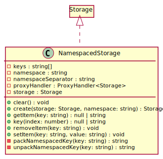
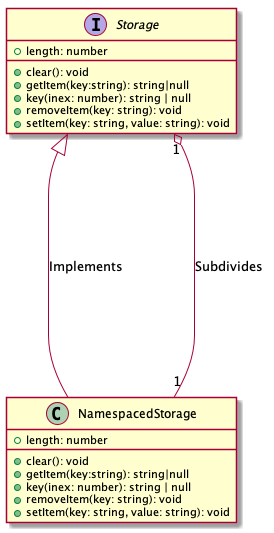

Hierarchy-Diagram
{kind=link}
Legend
 class
class
 private property
private property
 public method
public method
 private method
private method
Hierarchy
- NamespacedStorage
Implements
- Storage
Indexable
Summary
A utility unit designed to encapsulate any Storage implementation.
Structure
Description
Designed and implemented to be in full, drop-in replacement compatibility with the native Storage API both
interface and behavior-wise, it empowers developers to create namespaced Storage scopes.
It allows you to subdivide Storage implementations into smaller groups of Storage units with reduced focus to
their smaller scope.
Due to its dependency on Proxy,
instances may only be created via the factory method #create:
const storage: Storage = NamespacedStorage.create(window.localStorage, 'example');
const nestedStorage: Storage = NamespacedStorage.create(storage, 'nested');
const deepestStorage: Storage = NamespacedStorage.create(storage, 'deepest');
Important Tip
Despite the contemporary trends with TypeScript on the UI or the Back-End, please, make sure to always depend on interfaces instead of implementations. It will help you keep your software as dynamic and flexible as it can be.
Software is meant to be soft. Keep it that way.
Perks
Get & Set Items (AKA: CRUD)
As per the official Storage API, it allows for IO
operations both via methods and properties. Take the following example:
The following lines of code all set the same value to the same storage unit
storage.cool = 'It\'s awesome!';
storage['cool'] = 'It\'s awesome!';
localStorage['example.cool'] = 'It\'s awesome!';
storage.setItem('cool', 'It\'s awesome!');
localStorage.setItem('example.cool', 'It\'s awesome!');
The following lines of code all return the same value written to the same storage unit
console.info(storage.getItem('cool'));
console.info(storage.cool);
console.info(storage['cool']);
console.info(localStorage.getItem('example.cool'));
console.info(localStorage['example.cool']);
A more practical example for property accessors:
type TodoItem = {
summary?: string,
priority?: number
}
function increasePriority(todoItem: TodoItem): void {
todoItem.priority = (todoItem.priority ?? 0) + 1;
}
const todos: Storage = NamespacedStorage.create(storage, 'todoItems');
const todo: Storage & TodoItem = NamespacedStorage.create(todos, 'item1');
increasePriority(todo);
increasePriority(todo);
increasePriority(todo);
// returns String("3")
console.info(localStorage.getItem('example.todoItem.item1.priority'));
Scope-Reduced interactions
A namespaced storage will only execute its methods within its namespace. This implies, that the keys which belong a
specific namespace are strongly connected to the given instance. When running clear, key, or getting length,
it behaves as expected: all operations & information is restricted to the namespace only.
Index
Constructors
Properties
Accessors
Methods
Constructors
Private constructor
-
Parameters
-
storage: Storage
-
namespace: string
-
keys: string[]
Returns NamespacedStorage
-
Properties
Private keys
Private Readonly namespace
Private Readonly storage
Private Static namespaceSeparator
Private Static proxyHandler
Accessors
length
-
Tells the number of entries within the given
NamespacedStorage.Returns number
Number of entries within the namespace.
Methods
clear
-
Removes all storage entries keyed to belong to the current
NamespacedStorage.Returns void
getItem
-
Returns the queried entry within the encapsulated namespace.
Parameters
-
key: string
Returns null | string
-
key
-
Returns the
indexth key encapsulated by theNamespacedStorage.Parameters
-
index: number
Returns null | string
-
Private packNamespacedKey
-
Parameters
-
key: string
Returns string
-
removeItem
-
Removes the item stored under the given
keywithin the encapsulated namespace.Parameters
-
key: string
Returns void
-
setItem
-
Sets the
valueunder the givenkeywithin the encapsulated namespace.Parameters
-
key: string
-
value: string
Returns void
-
Private unpackNamespacedKey
-
Parameters
-
key: string
Returns string
-
Static create
-
Creates a new
NamespacedStorageinstance with the appropriateProxyhandler in place.Parameters
-
storage: Storage
The
Storageobject to encapsulate. AnyStorageimplementation. -
namespace: string
The string to use as a namespace for the newly created
NamespacedStorage.
Returns Storage
The newly created namespaced storage object.
-
Summary
A utility unit designed to encapsulate any
Storageimplementation.Structure

Description
Designed and implemented to be in full, drop-in replacement compatibility with the native
StorageAPI both interface and behavior-wise, it empowers developers to create namespacedStoragescopes. It allows you to subdivideStorageimplementations into smaller groups ofStorageunits with reduced focus to their smaller scope.Due to its dependency on
Proxy, instances may only be created via the factory method#create:Important Tip
Despite the contemporary trends with TypeScript on the UI or the Back-End, please, make sure to always depend on interfaces instead of implementations. It will help you keep your software as dynamic and flexible as it can be.
Software is meant to be soft. Keep it that way.
Perks
Get & Set Items (AKA: CRUD)
As per the official
StorageAPI, it allows for IO operations both via methods and properties. Take the following example:The following lines of code all set the same value to the same storage unit
The following lines of code all return the same value written to the same storage unit
A more practical example for property accessors:
Scope-Reduced interactions
A namespaced storage will only execute its methods within its namespace. This implies, that the keys which belong a specific namespace are strongly connected to the given instance. When running
clear,key, or gettinglength, it behaves as expected: all operations & information is restricted to the namespace only.1.0.0
1.0.0
MDN Proxy Object
MDN Storage Interface